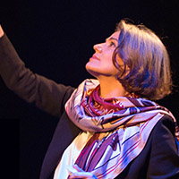
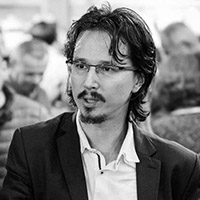
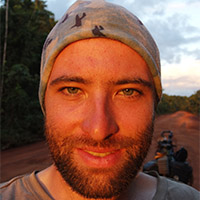
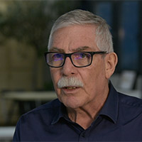
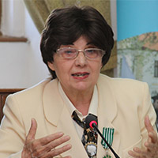
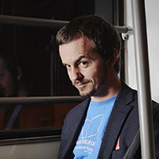
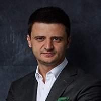
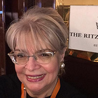
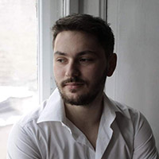
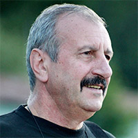

About
NOI VORBIM LA
TEDx PARCUL TINERETULUI

Titlu: „Viața de după cortină”
Maia Morgenstern
Actriță a Teatrului Evreiesc de StatTitlu: „Viața de după cortină”
Cristi Danileț
JudecătorTitlu: „Lupta pentru drept” 

Titlu: „3 ani și 3 luni pedalând Americicile”
Radu Păltineanu
Ciclotrotter, alpinist, speakerTitlu: „3 ani și 3 luni pedalând Americicile”
Ian Tilling
Fondator și Președinte al organizației „Casa Ioana”Titlu: „There’s a crack in everything, that’s how the light gets in” 

Titlu: „Verbele mele preferate, cu sufixe și prefixe,conjugate la trecut, prezent și viitor: A primi și a da, sau invers.”
Biro Hendre Doina
Doctor în istorie la Sorbona și medaliată „Chevalier de l'Ordre des Arts et des Lettres”Titlu: „Verbele mele preferate, cu sufixe și prefixe,conjugate la trecut, prezent și viitor: A primi și a da, sau invers.”
Victor Miron
Inițiator al proiectului „Cărțile pe față”Titlu: „Cum cititul ne poate dezvolta creativitatea” 

Titlu: „Franchețea: Intenționalitate vs. Lene”
Michael Bulzan
Director Regional EMEA, Duke UniversityTitlu: „Franchețea: Intenționalitate vs. Lene”
Irina-Margareta Nistor
Comentator radio-tv, critic de cinema și traducător-interpretTitlu: „Filmul: salvarea din orice situație” 

Titlu: „Portret al artistului la tinerețe”
Andrei Nuțu
Artist vizualTitlu: „Portret al artistului la tinerețe”
Victor Purice
Directorul Cinematografului Dacia Piatra NeamțTitlu: „Nebunul cinematografului românesc” 
AM VÂNDUT DEJA TOATE BILETELE
©2019-2020 - Matei Radu